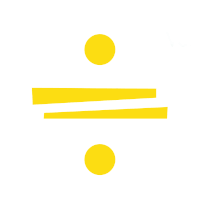

<!--Dit is de code van de titelbar, dit verandert automatisch op alle pagina's. -->
<div class="title-bar">
    <div class="links-container">
      <a href="/Juupu-site/index.html" class="fade-out-link">
          
      </a> | 
      <a href="/Juupu-site/informatie.html" class="fade-out-link">OVER JUUPU</a> | 
      <a href="/Juupu-site/contact.html" class="fade-out-link">CONTACT</a> |
    <a href="/Juupu-site/overig.html" class="fade-out-link">OVERIG</a>
    </div>
  </div>

<!--De volgende 4 regels kan je activeren als er een tijdelijke banner nodig is!-->
<div class="temp-banner">
    De volgende inzameling is op 1 Januari in de grote pauze!
  </div>
<br><br><br>

<br><br>

<!--logo gifje-->
  <div class="logo">
    
  </div>
